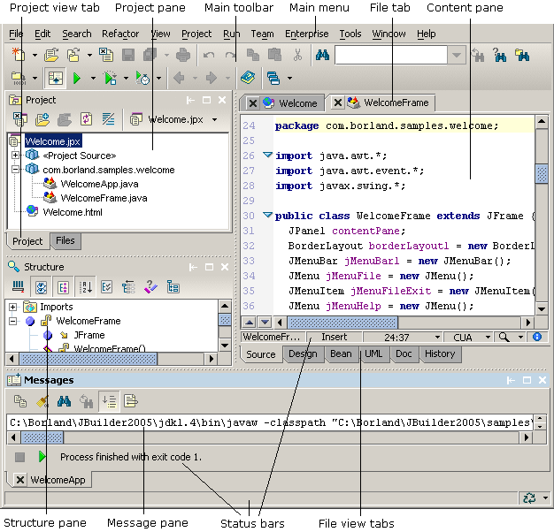

Features vary by JBuilder edition
The JBuilder integrated development environment (IDE) consists of a window that contains several panes and panels for performing most development functions: editing, visual designing, navigating, browsing, comparing, modeling, building, compiling, debugging, running, optimizing, and auditing.
Note: To expand the content pane to full width (hiding the project and structure panes), choose View|Maximize Content Pane from JBuilder's main menu.

Use the Preferences dialog box (Tools|Preferences) to customize the development environment. You can control such IDE preferences as:
For more information, see:
Getting Started with JBuilder: JBuilder's work environment
Getting Started with JBuilder: Setting JBuilder preferences